每个页面在 Chromium 中截图三次。随后由 Claude Opus 5.5 评审员把同一题的两份答案以匿名的 A 和 B 并排评分，依据是该题官方的 10 项检查清单，每项 10 分。和官方评审一样，评审员会阅读完整源码和截图。五个方案两两组合共十对，每对进行一轮盲评，所以每个页面都有一次对其余四个对手各自的评分。一个方案在某题上的得分就是这四次评分的平均。
按类别和难度的平均分
Qwen IQ4
Qwen IQ3
Qwen NVFP4
Terra
Sol
Sol 在每一组都领先。其余方案中，IQ3 在游戏、仿真和简单题上领先，Terra 在 SVG、网页视觉和困难题上领先。NVFP4 在 SVG、仿真和中等难度题上落后最多：它的五个缺失或损坏页面中，四个是中等难度题，三个是仿真题。鼠标悬停某一行可查看数值。
Sol 对每个对手都在 40 题中赢下 36 到 39 题。IQ3 和 IQ4 都赢了 NVFP4。IQ4 还以 28 比 12 赢了 Terra，尽管 Terra 的平均分更高：Qwen 的页面只要能用，往往比 Terra 的好；但只要 Qwen 的页面缺失或损坏，Terra 就会大比分获胜。
123034
各方案得分最高的题数
54500
损坏页面：缺失、加载时抛出 JavaScript 错误，或因库加载失败而卡住
27 KB29 KB24 KB21 KB66 KB
页面大小中位数
22k26k14k8k37k
每个页面的输出 token 中位数
Sol 的页面最大，也最完整。Terra 的页面最小，每一个都能运行，但评审员认为内容单薄。三个 Qwen 版本的目标比 Terra 更高，可靠性却更差：每个版本都有四到五个页面缺失或损坏。NVFP4 是三者中写得最少的，有三道题结束时没有保存页面，并排评审中输给了工作站上的两个版本。
四道题并排看
每个页面加载两秒后的首屏。每个分数是该页面四次评分的平均。
地月轨道
任务 394 · 物理仿真 · 中等
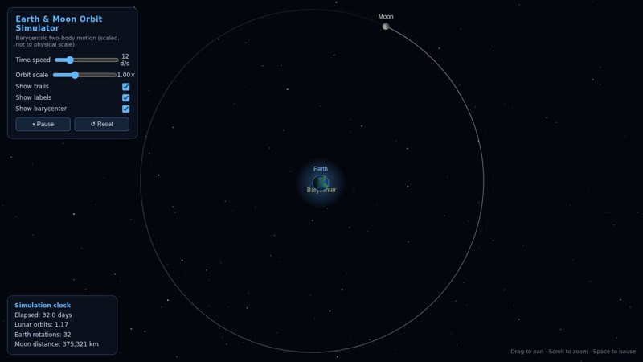
Qwen IQ4
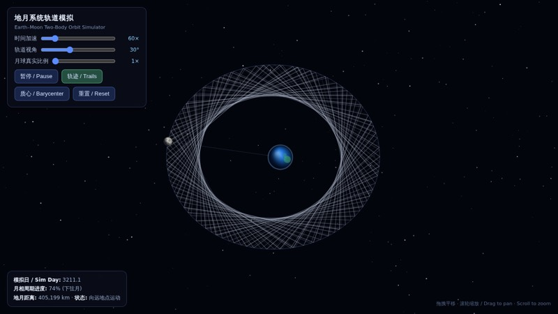
Qwen IQ3
没有页面：智能体结束时没有保存。
Qwen NVFP4
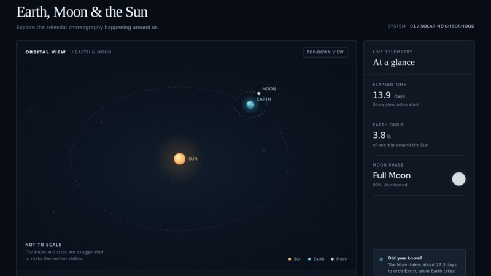
Terra
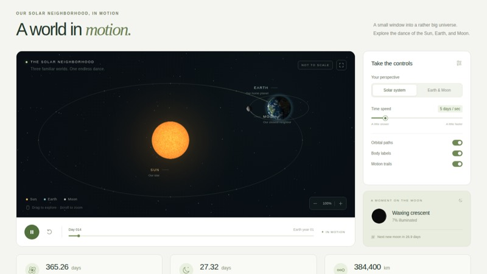
Sol
Sol 的页面最精致：有光照的纹理天体、月相卡片和时间轴。正常版 IQ4 排第二，物理最扎实：基于质心的二体模型，沿真实的开普勒椭圆运动，支持缩放、平移、轨迹和实时距离读数，只是没有画太阳。IQ3 的物理同样真实，但默认速度约为每秒 1,200 天，月球被拖成一团轨迹。Terra 的仪表盘很干净，月相面板也正确，但轨道只是简单的压扁圆。NVFP4 结束时没有保存页面。
黄黑配色的 SIM 卡
任务 46 · SVG 图像 · 简单
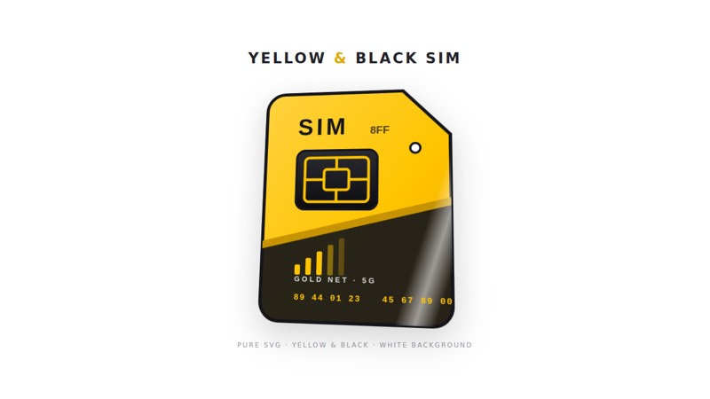
Qwen IQ4
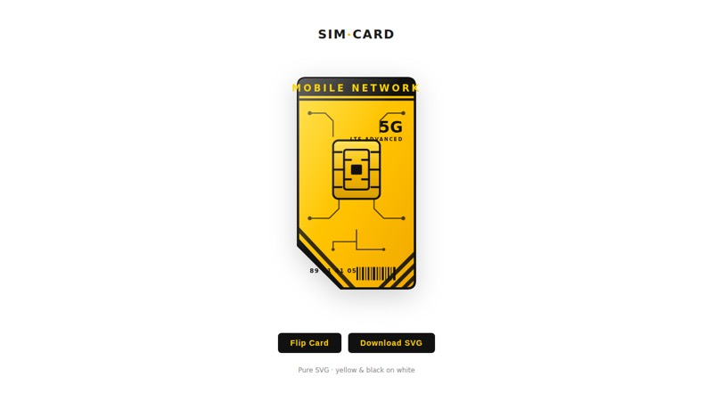
Qwen IQ3
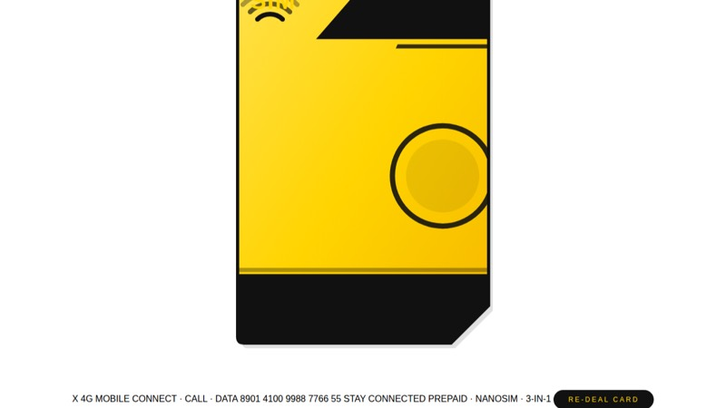
Qwen NVFP4Terra
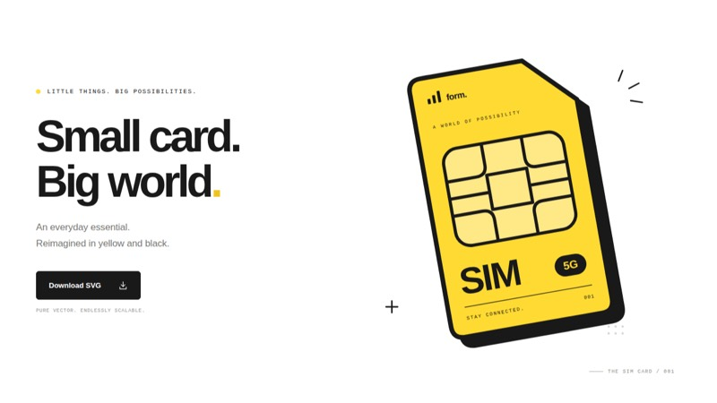
Sol
Sol 和 Terra 领先，卡片比例真实，触点芯片令人信服。IQ3 的卡片切角干净，翻转和下载按钮都能用，但页眉文字超出了卡片。正常版 IQ4 画了一张偏短的竖卡，有光泽扫过和随指针倾斜的效果，但芯片只是一个风格化的框，不像触点。NVFP4 在 SVG 的文字里放了一个 HTML 元素，导致芯片和文字都没有作为图形渲染，而是在卡片下方漏成一行纯文本。
赛车游戏
任务 1013 · 体育游戏 · 中等
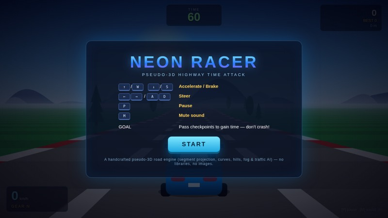
Qwen IQ4
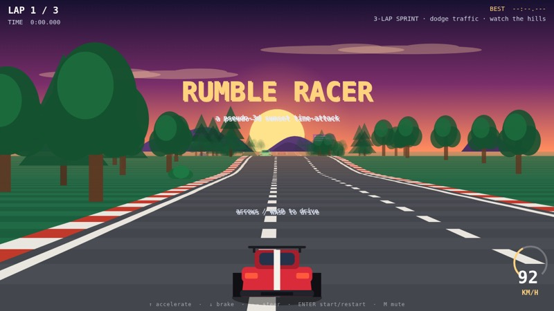
Qwen IQ3
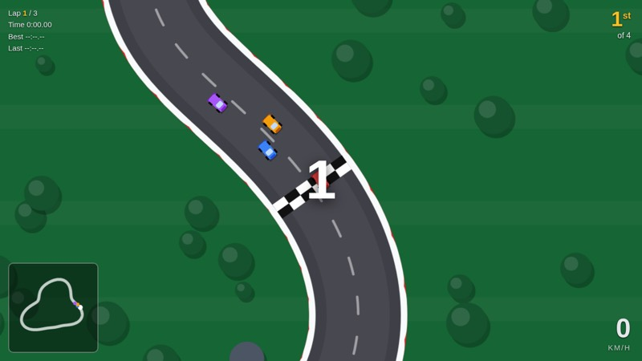
Qwen NVFP4
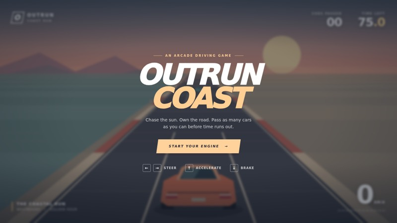
Terra
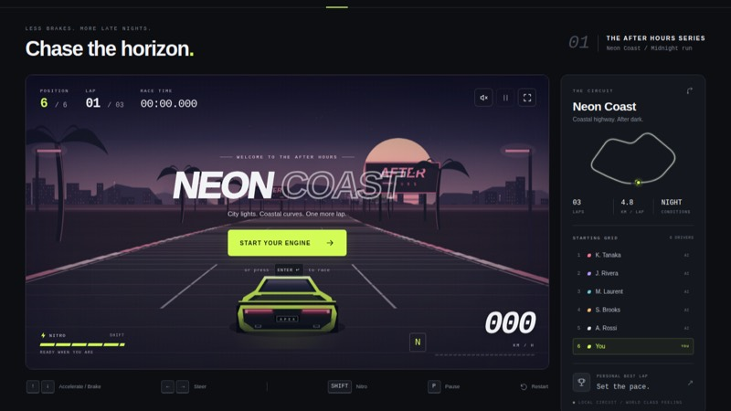
Sol
三个 Qwen 版本在这道题上都做出了真正的赛车游戏，而且得分都高于 Terra。IQ4 写了一个 OutRun 风格的伪 3D 引擎，有弯道、坡道、雾效、车流和演示模式；IQ3 的引擎类似，还有路边景物和引擎声。NVFP4 做的是俯视视角的环形赛道，有倒计时、三圈赛程、AI 对手和小地图。Sol 的伪 3D 比赛加入了圈数、比赛计时和发车格。Terra 的海岸计时赛手感不错，有漂移和车流，但没有圈数、对手和倒计时。